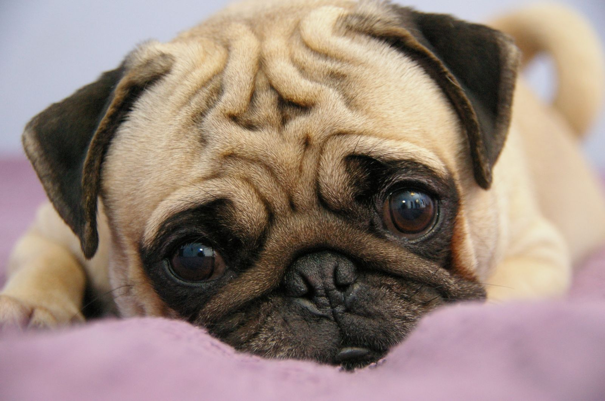
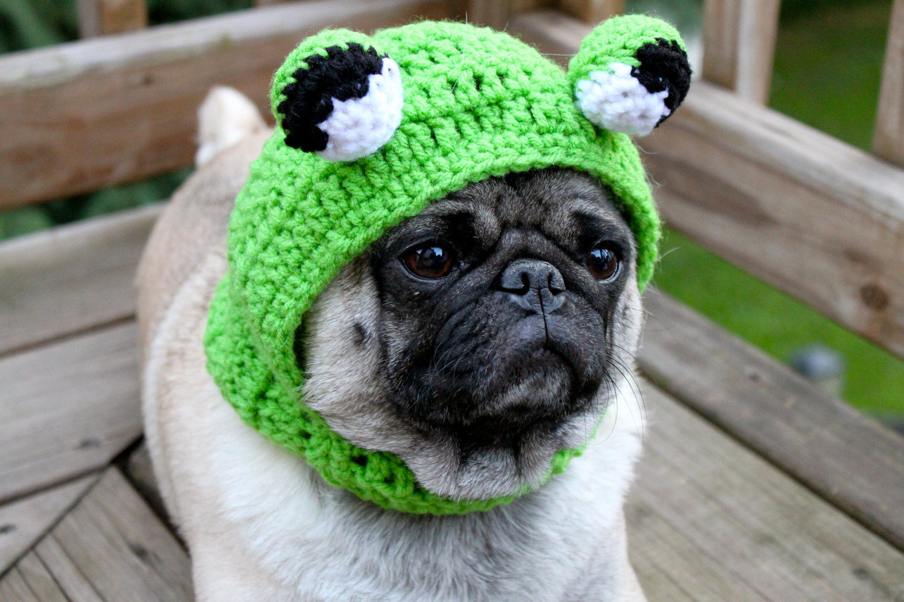
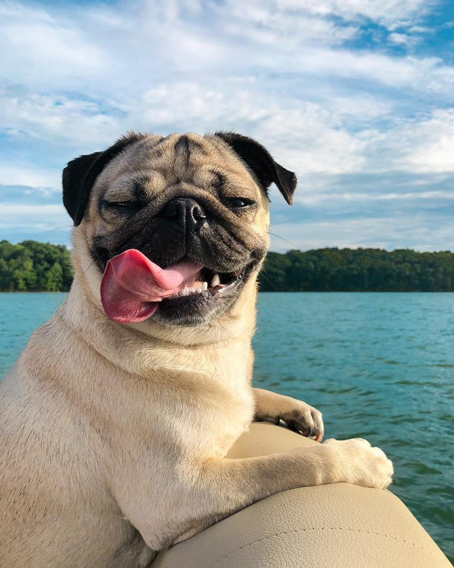
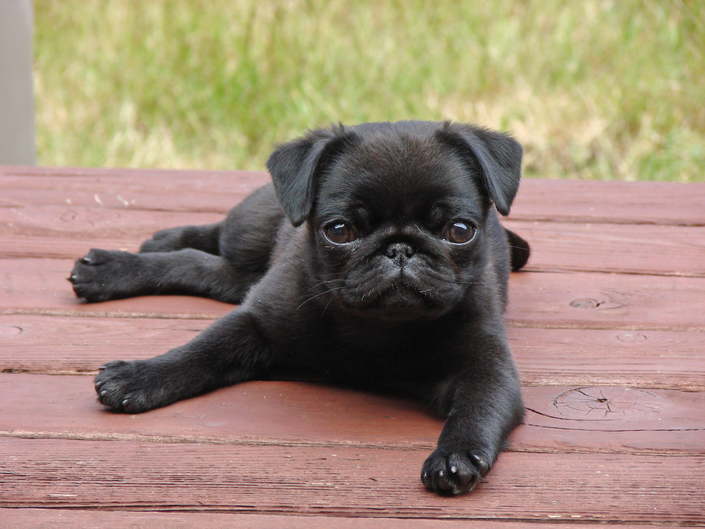
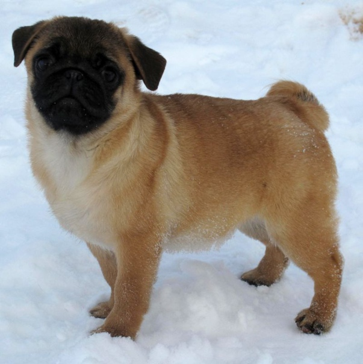
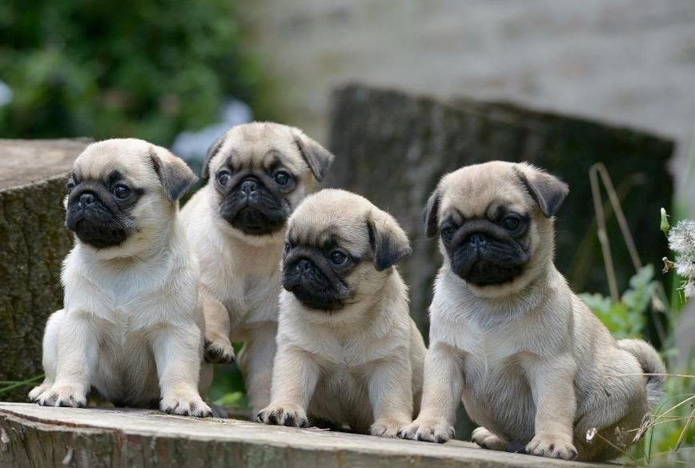
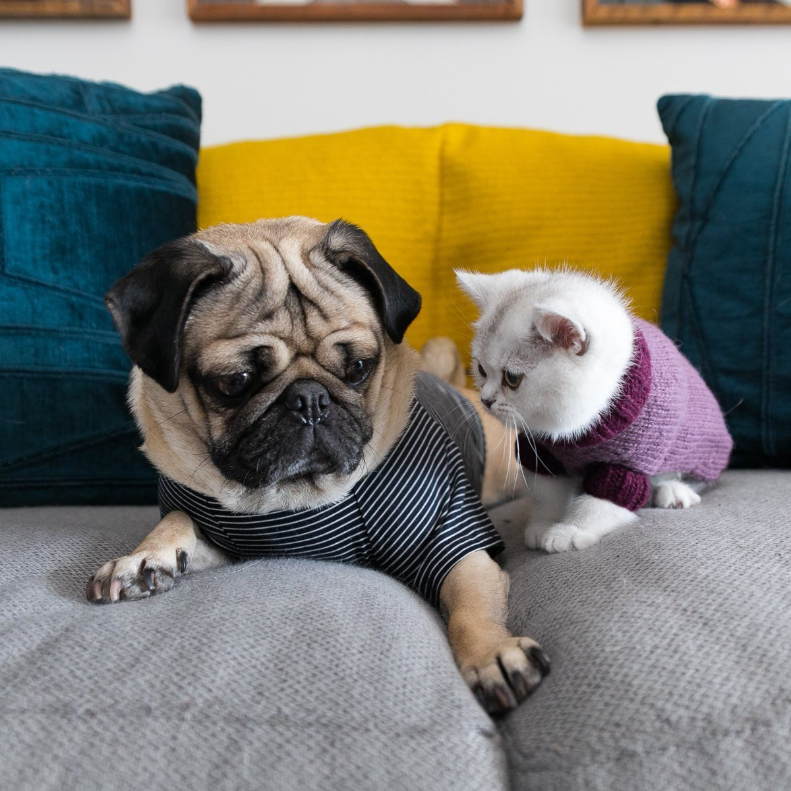

Мопс. Описание и фото мопса.
Мопс — порода декоративных собак. Мопсы были привезены из Китая в Европу в XVI веке и были популярны в Западной Европе и Нидерландах. В Соединённом Королевстве в XIX веке королева Виктория развила страсть к мопсам, которую она передала другим членам королевской семьи. Мопсы известны тем, что являются общительными и нежными собаками-компаньонами.
{kind=link}
Описание породы мопса.
Нормой для взрослого мопса считается диапазон веса от 6,3 до 8,1 кг. Рост в стандарте четко не прописан, но в среднем составляет 25-30 см для сук и 30-33 см для кобелей. Мопс – коренастая собака с квадратными очертаниями. Голова крупная, массивная, округлая, но не «яблоковидная», не имеет выраженных выступов и вмятин, кости черепа незаметны. Морда квадратная, короткая, тупая, но не вздернутая, с глубокими симметричными морщинами.
{kind=link}
Глаза темные, большие, круглые, достаточно выпуклые, но не навыкате.Мочка носа темная, находится на одной линии с глазами и визуально является центром морды. Уши мопсов небольшого размера по отношению к голове, тонкие и очень мягкие. Хвост мопса короткий, толстый, плотно покрыт шерстью, посажен высоко и прижат к туловищу. Скручен в кольцо, причем предпочтителен двойной виток.
{kind=link}
Шерсть мопса – короткая, тонкая, плотно прилегающая, гладкая и мягкая на ощупь. Обычно имеет одну длину по всему телу, однако может быть несколько короче на морде и чуть длиннее в задней части туловища. У животных черного окраса шерсть грубее, чем у бежевых и абрикосовых собак.

Историческая справка
Мопсы визуально схожи с боксерами и английскими бульдогами. Но корни их находятся на Востоке. Первые изображения собак, которые дошли до наших времен, датированы VI–IV вв. до н.э. Еще философ Древнего Китая Конфуций упоминал их, как спутников знати, которая перемещалась на колесницах. Интерес к мопсам возродился во второй половине XIX ст. благодаря королеве Виктории, которая с любовью относилась к своим питомцам. Во время Второй опиумной войны на Западе оказались черные особи, о которых никто ничего не знал раньше. Черные псы до нашего времени редкость, поэтому стоят дороже. В целом эта порода была и остается популярной.

Характер мопса.
Это веселая, дружелюбная, уравновешенная порода с ласковым и благородным нравом. Собаки очень преданы хозяину и его семье, хорошо ладят с детьми. Они нуждаются во взаимности. Если захотят внимания, то просто подойдут и поудобнее устроятся рядом.
{kind=link}
Мопсы очень настойчивы. Если они чего-то захотят, то без труда покажут это хозяину. К дрессировкам и тренировкам относятся не очень хорошо. Очень важно во время дрессировки не повышать голос на питомца, иначе вы напрочь отобьёте желание к тренировкам.
{kind=link}
Хозяевам мопсов не придется выслушивать жалобы соседей на навязчивый лай, что, конечно, не гарантирует режим тишины. Ваш питомец будет постоянно громко сопеть, сипеть и испытывать приступы метеоризма. А еще мопсы – абсолютные чемпионы по собачьему храпу, чего и не заподозришь с учетом их скромных габаритов. Впрочем, последнее многие считают скорее забавной особенностью, чем недостатком.
{kind=link}
Уход за мопсом.
Заболевание сталкиваются на протяжении всей жизни. Они могут быть как врожденными, так и приобретенными. Самые уязвимые места породы - дыхательная система и глаза.
{kind=link}
Короткую и гладкую шерсть можно вычесывать самостоятельно дома. Рекомендуется это делать 1 раз в 7 дней. Купать мопса достаточно 1 раз в 2-4 недели. Прогулки должны быть ежедневными. Не спеша можно гулять до полутора часов. Также собакам нужно бегать. Допускается легкая пробежка без поводка на протяжении 10-15 минут. Для прогулок при низких температурах позаботьтесь о специальной одежде для собаки, так как ее короткая шерсть не защищает от мороза.